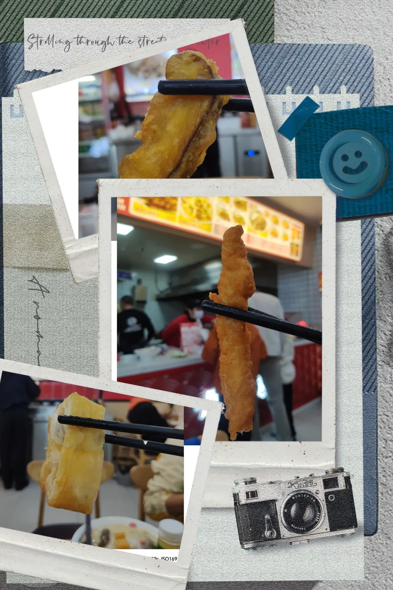
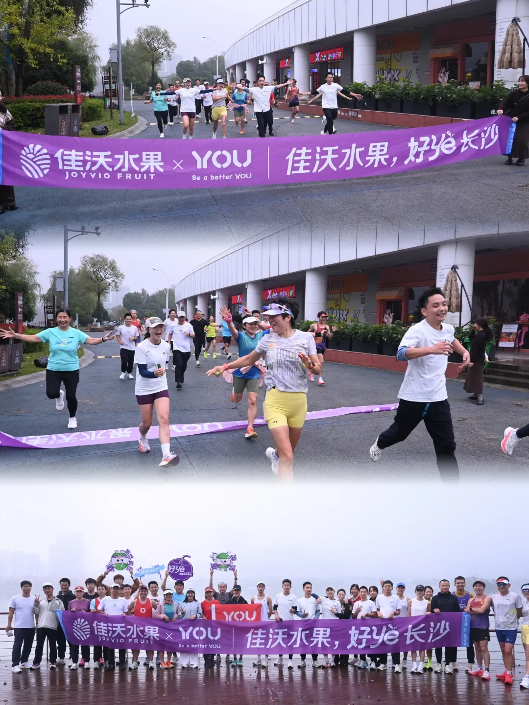
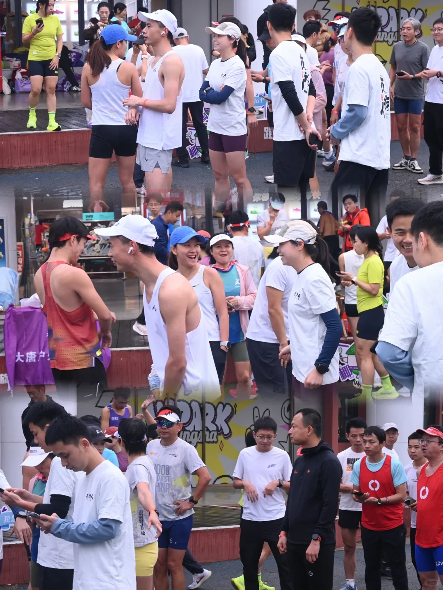

湖边跑4.5公里，再一起去吃早餐
去长沙跑马拉松，先和跑友约一场早餐跑。周六早上7:30，近40位跑友在西湖公园集合，YOU的跨城行程从湖边开始。

把赛前的早晨留给湖边
活动由跑团教练带着热身，接着完成4.5公里环湖跑，再一起拉伸。原帖记录，活动开始后雨停了，大家按安排完成了这次早餐跑。
从集合到跑完，跑友们有机会认识同行的伙伴，也为接下来的长沙马拉松行程留下一张共同的合照。

跑完，一起过早
拉伸结束，队伍转场早餐店。一起吃早餐是这次活动安排的一部分，湖边的跑步也就接上了长沙的日常生活。
本次早餐跑的场地支持为特步长沙西湖店，活动物料由佳沃水果提供。感谢这次活动中参与组织和支持的伙伴。
